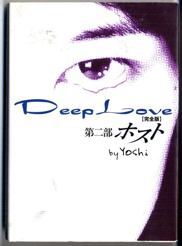
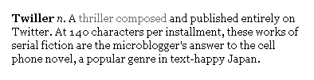
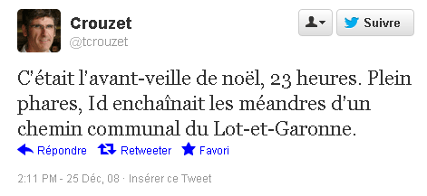
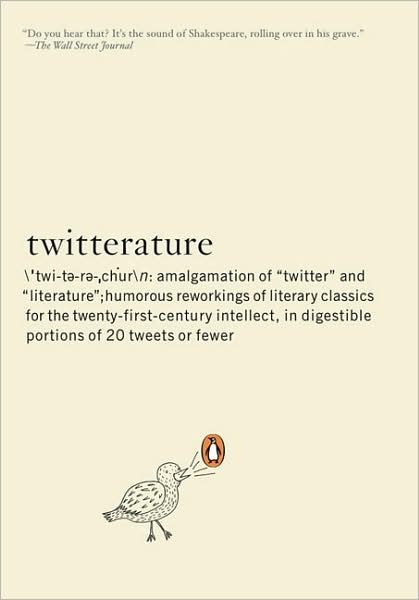
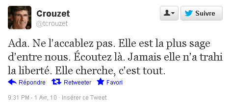
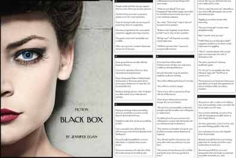

Twittérature
 À côté de mes billets plus ou
moins théoriques, voici quelques liens qui racontent l'histoire
de la twittérature, des twillers et autres tweet-nouvelles.
À côté de mes billets plus ou
moins théoriques, voici quelques liens qui racontent l'histoire
de la twittérature, des twillers et autres tweet-nouvelles.
- Antiquité, les austères Spartiates pratiquent le laconisme (en Laconie bien sûr). « Les hommes de peu de mots ont besoin de peu de lois », disait le roi Charilaos.
- Début XIe, Japon, Sei Sh?nagon compile des fragments poétiques dans son chef-d'œuvre Makura no s?shi.
- XVIIe, Japon, Bash? invente le haïku.
- 1836, Angleterre, Charles Dickens publie The Pickwick Papers, le premier roman feuilleton.
- 1838, France, Xavier Forneret publie Sans titre, par un homme noir blanc de visage, une collection de fragments.
- 1906, France, Nouvelles en trois lignes, Félix Fénéon (depuis portées sur Twitter).
- 1924, avec « For Sale, Baby Shoes, Never Worn », Ernest Hemingway serait à tort l'inventeur de la microfiction ou micronouvelle ou flash fictions ou sudden fiction.
- 1960, Raymond Queneau, Italo Calvino, Georges Perec... créent l'Oulipo. Ils mettent en avant la force de la contrainte dans l'écriture, comme c'était déjà le cas en poésie, mais supposent qu'il existe une quasi infinité de contraintes fécondes. La twittérature ne sera qu'une contrainte possible, et au sein même de la twittérature différentes contraintes apparaîtront.
- 1978, Perec publie Je me souviens.
- 2000, Japon, la plate-forme de blogs Mahou no iRando permet aux blogueurs romanciers de republier leurs textes sous forme de livres électroniques.
- 2000, Japon, Yoshi sms Deep Love, premier cell phone novel ou Keitai shousetsu, Keitai signifiant téléphone mobile, shousetsu roman. Des fragments publiés au fil de leur écriture s'emboîtent pour former une longue narration. Les auteurs de phone novels sont, ni plus ni moins, des feuilletonistes. Par opposition, les auteurs qui collectionnent les fragments ou écrivent des micronouvelles pratiquent la nanolittérature.
- 2002, Japon, publication en livre de Deep Love
(2 700 000 exemplaires, série TV, film, manga...).

- 2004, Japon, les opérateurs téléphoniques incluent à leurs forfaits les SMS illimités. Boom dans la production de phone novels, en suite reconstruits et diffusés par des sites comme Mahou no iRando. Selon Dhananjoy Roy, les lecteurs interagissent avec les personnages comme dans un jeu vidéo, d'où le succès du genre, notamment chez les jeunes.
- 18/3/2005, Associated Press, Cell Phones Put to Novel Use.
- 3/2006, Japon, Eternal Dream, écrit en 19 jours.
- 11/2006, Wired publie une quarantaine de Very Short Stories.
- 2007, Japon, Mei sms The Red Thread (1 800 000 exemplaires).
- 2007, Allemagne, Oliver Bendel et Wolfgang Hohlbein publient des cell phone novels.
- 18/1/2008, New York Time, Thumbs Race as Japan’s Best Sellers Go Cellular.
- 4/2008, Jean-Louis Bailly commence la publication de ses Nouvelles impassible, sur le modèle des Nouvelles en trois lignes de Félix Fénéon (hors de Twitter mais comme s'il y était).
- 25/4/2008, Nick Belardes commence la rédaction de sa novella SmallPlaces sur Twitter (la publication se termine le 9/3/2010 après 992 tweets, soit l'équivalent d'un livre d'une centaine de pages). Il est le premier à adapter le phone Novel au réseau de microblogging.
- 10/5/2008, Brésil, Carlos Seabra se lance dans la poésie érotique et les microcontes.
- 10/6/2008, Matt Richtel forge le mot twiller à partir de Twitter et Thriller. Il commence la publication de sa nouvelle It should not be snowing (fin le 30 décembre 2008, 220 tweets plus tard).
- 29/8/2008, The New York Time, Introducing the Twiller, Matt Richtel.
- 2/9/2008, Byte-sized stories: Twittering a tiny tale, Ryan Paul.
- 2/9/2008, Twitter Novels: Not Big Success Stories Yet, un point sur les premiers projets d'écriture. Conclusion : Big in Japan Doesn't Mean Big Everywhere.
- 3/9/2008, Twiteromans, Francis Pisani.
- 24/11/2008,
Wired définit le mot Twiller.

- 7/12/2008, The Small New World of Micro, Tim Leberecht.
- 25/12/2008, premier
tweet de La quatrième théorie (alors titré
Croisade). Je décide d'écrire un roman populaire aussi
gros que le Da Vinci Code (histoire
détaillée). À ma connaissance, je suis alors le premier à me
lancer dans une expérience de grande ampleur (les phone novels ou
la Novella de Nick Belardes n’ont jamais dépassé les 200 pages).
Mais pas de quoi crier cocorico.

- 2008, Japon, Mika sms Love Sky (2 600 000 exemplaires, #1 best-seller).
- 18/01/2009, Le Monde, Le SMS crée un nouveau genre littéraire (PDF), Olivier Zilbertin.
- 13/3/2009, Laurent Zavack twitte la nouvelle On l’appelait Sodomy (saucissonnage d'une nouvelle en tweets).
- 20/4/2009, depuis Aurise, Monique Le Pailleur va s'intéresser à transposition de la twittérature dans le monde de l'éducation.
- 29/4/2009, A guide to writing fiction on twitter, Anson Brehmer.
- 21/6/2009, Jean-Michel Le Blanc crée @CentQuarante où il ne twitte que des messages d'exactement 140 caractères, dans la pure tradition de l'Oulipo.
- 14/7/2009, Matt Stewart crée le buzz en saucissonnant sur Twitter un roman refusé par les éditeurs (des journalistes peu curieux croient que c'est une première et confondent écrire sur Twitter et publier sur Twitter).
- 27/8/2009, From Telegraph to Twitter: The Language of the Short Form, Roy Peter Clark.
- 31/8/2009, Twitteropera.
- 29/12/2009, sortie de Twitterature: The
World's Greatest Books in Twenty Tweets or Less par
Alexander Aciman et Emmett Rensin (sortie en France en mars
2012).

- 1/4/2010, dernier
des 5 200 tweets de La quatrième
théorie. Après les nouvelles et novellas, c'est
sans doute le premier roman écrit de bout en bout sur Twitter,
surtout par sa date de début (le premier dans la catégorie du long
fait avec du court).

- 24/6/2010, France-Canada, création de l'Institut de Twittérature comparé par Jean-Yves Fréchette et Jean-Michel Le Blanc.
- 3/2011, Olivier Aubert publie Impossible de penser, un Twitter Théâtre.
- 18/3/2011, Laurent Margantin invente la twittérature parodique avec le Le roi des éditeurs.
- 18/7/2011, Luciel Suel commence Kurt Witter un feuilleton où chacun des épilsodes comporte exactement 10 tweets de 140 signes.
- 1/2/2012, Dominique Hasselmann publie 140 tunnels.
- 24/5/2012, via @NYerFiction, Jennifer Egan
publie
Black Box, une nouvelle d'espionnage par tweets qui
connaît un grand succès.
black box
- 27/5/2012, Marc Mentré commence une nouvelle traduction de La Divine Comédie et la publie tous les matins sur Twitter.
- 3/10/2012, Le Monde, La twittérature, une nouvelle invention ?, Macha Séry.
- 17/10/2012, Livres Hebdo, La Twittérature, pédagogique et festive.
- 18/10/2012, BiblioObs, La twittérature a son festival... et ses tweets d'or, Nicolas Guégan.
- 15/11/2012, Twittérature mécanique, Lucien Suel.
- 2/2/2013, Le Devoir publie 24 nouvelles inédites en 140 caractères.
- 6/2/2013, je publie ma taxinomie de la twittérature.
- 27/3/2013, sortie de La quatrième théorie.
- 30/3/2013, Bordeaux, second festival de twittérature.
- 12/4/2013, AFP, La twittérature, gadget numérique ou nouvel avatar de l'art du bref, Damien Stroka.
Sommaire | Texte publié mardi 6 novembre 2012